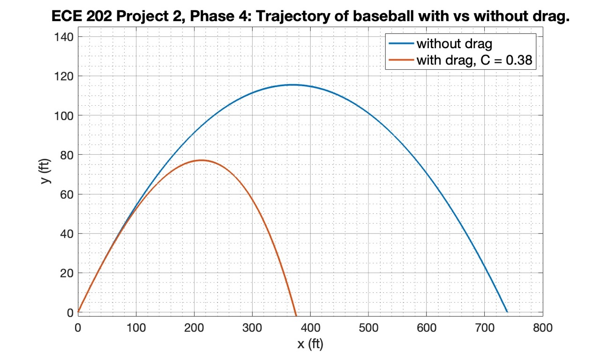
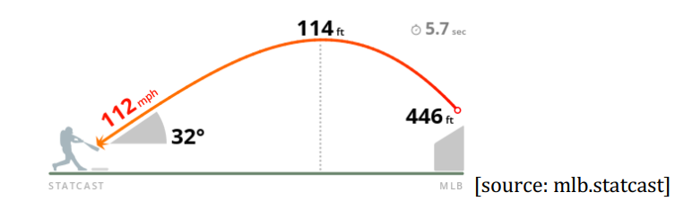

 This was one of the final projects that I did for my class ECE 202, Computational tools for engineers in my first year of studying comptuer engineering. The class was taught by Professor Bill Leonard, who uses a method known as the mastery model. This style of instruction revolves around submitting assignments several times over and making changes based on extensive feedback until a perfect or near perfect result is acheived. This particular project took over 20 submissions, spread over 5 phases. Although the workload was occasionally overwhelming, taking this class was one of my most valuable learning experiences. It gave me a better understanding of what a boss could expect from me at a job or internship in terms of both styles of direction and the review process. I now feel better equipped to work independently as a computer engineer.
The most valueable skills I learned by completing this project was getting a feel for project lifecycles and learning how to break down problems. Had I not been following the provided outline for how to approach the problem, I would have dove straight into trying to figure out the physics problem directly in MATLAB. Instead, I defined variables that would be used often such as ball mass and gravity. I then broke down the problem in the it's simplest case: no drag, no with separate calculation for vertical and horizontal movement over time. As I moved forward, I slowly began to increase the complexity. This gave me a good understanding of my script throught the whole project cycle, and made working on the project much less mentally taxing. Code is not shared due to potential plagerism concerns.